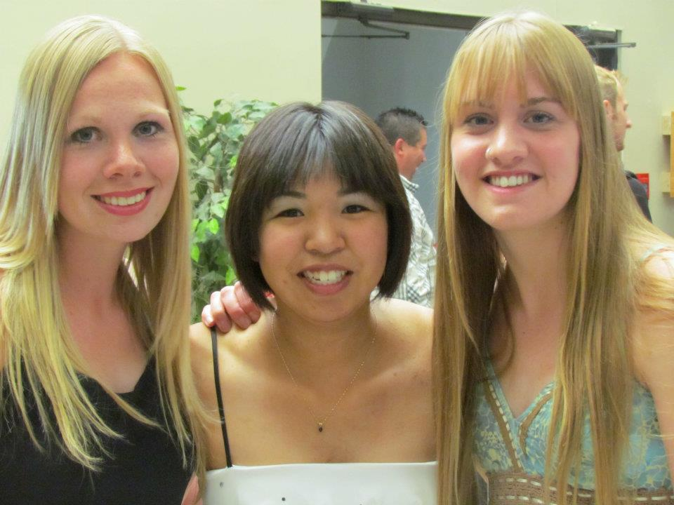
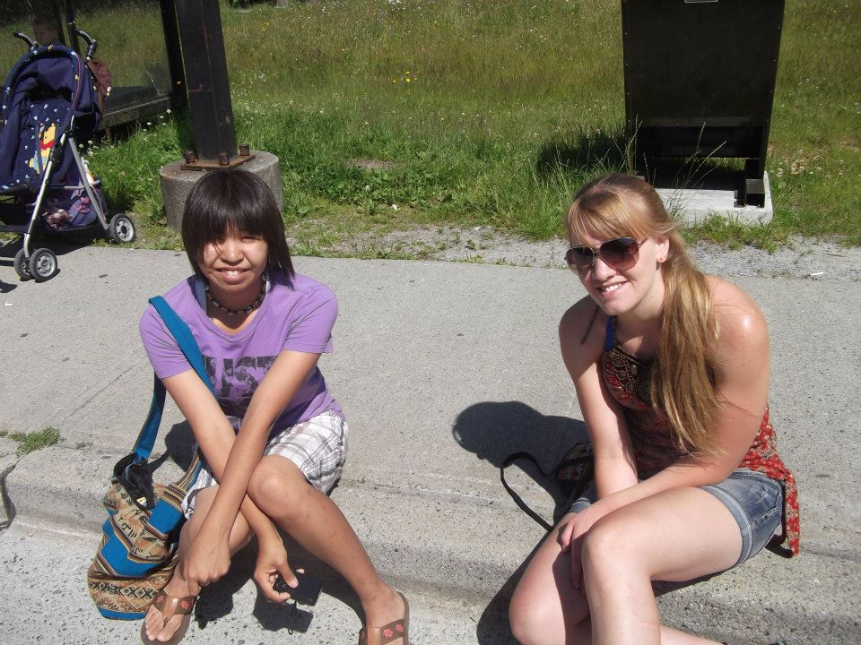
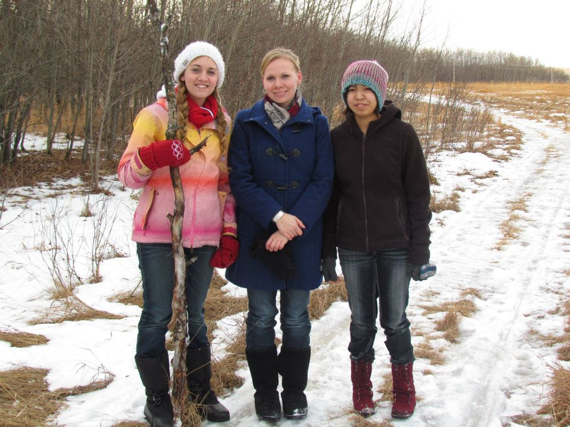
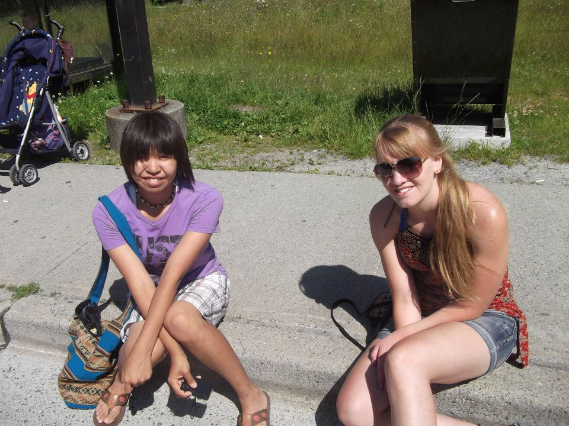
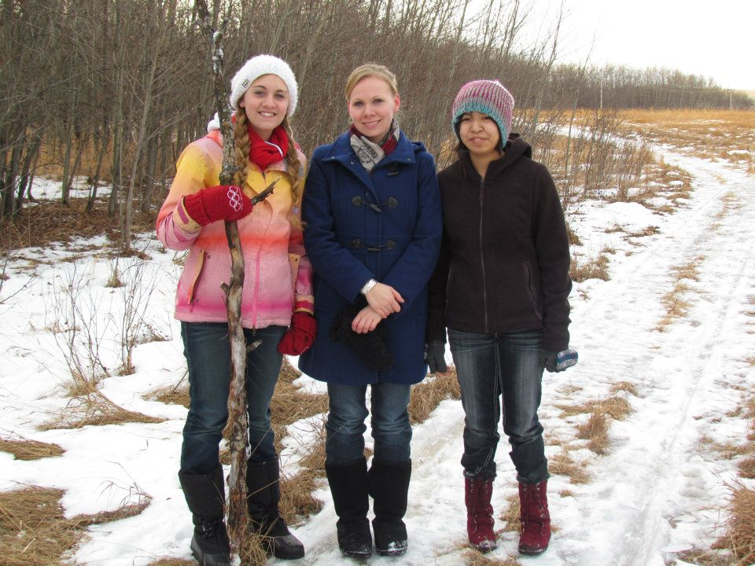

Sisters
My Friends
Alicen, Rachel, and Jessica. The Slykhuis's sister, I remember dance parties in the living room, eating chinese food at home with my sisters and mom. One year, my mom tried doing home schooling for Rachel and I. That was when my other sister, Jess started her college years. We lived in Prince George with a dog. I was in grade 1, Rachel was in grade 8, and Jessica was in her first year of college.
Friend One
This is my sister, Rachel. When we were little we used to play together. I remember playing super mario and donkey con, nevertheless with a super nintedo. We get along now, she is one of my friends. Rachel's personal is a people person. One of the things I love about my sister is that she tell the ablosute truth. No lies, but she also one of the most caring person too. We talked about boys, which I don't have much experience because shyness; anyways, we talk abuot animes, mangas, some korean bands, movies, video games, and sometimes adult things. Rachel is a couple years older than me but not by much. She is planning to became a doctor. At the moment, she is a nurse in Merritt. Everything she comes over for a weekend or a weekend in Chilliwack, there is ALWAYS, a story about the workplace. Rachel loves Merritt, the town, the people and the nature.
 



- Gamer
- Friend
- Self-driven